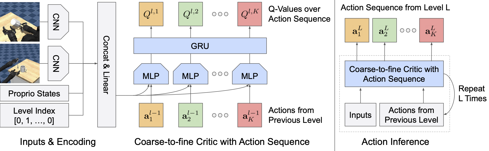
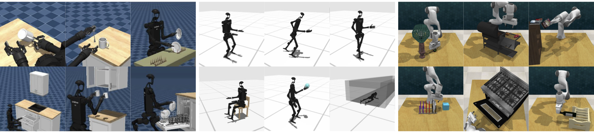
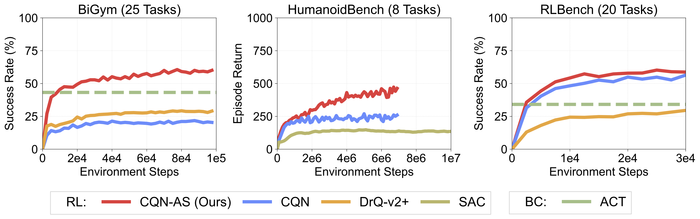

Training reinforcement learning (RL) agents on robotic tasks typically requires a large number of training samples. This is because training data often consists of noisy trajectories, whether from exploration or human-collected demonstrations, making it difficult to learn value functions that understand the effect of taking each action. On the other hand, recent behavior-cloning (BC) approaches have shown that predicting a sequence of actions enables policies to effectively approximate noisy, multi-modal distributions of expert demonstrations. Can we use a similar idea for improving RL on robotic tasks? In this paper, we introduce a novel RL algorithm that learns a critic network that outputs Q-values over a sequence of actions. By explicitly training the value functions to learn the consequence of executing a series of current and future actions, our algorithm allows for learning useful value functions from noisy trajectories. We study our algorithm across various setups with sparse and dense rewards, and with or without demonstrations, spanning mobile bi-manual manipulation, whole-body control, and tabletop manipulation tasks from BiGym, HumanoidBench, and RLBench. We find that, by learning the critic network with action sequences, our algorithm outperforms various RL and BC baselines, in particular on challenging humanoid control tasks.
We introduce Coarse-to-fine Q-Network with Action Sequence (CQN-AS), a value-based RL algorithm that learns a critic network that outputs Q-values over a sequence of actions. By explicitly learning Q-values of both current and future actions from the given state, our approach aims to mitigate the challenge of learning Q-values with noisy trajectories from exploratory behaviors or human-collected demonstrations. We design our architecture to first obtain features for each sequence step and aggregate features from multiple sequence steps with a recurrent network. We then project these outputs into Q-values at level l. For action inference, we repeat the procedure of computing Q-values for level l = 1, 2, ..., L. We then find the action sequence with the highest Q-values from the last level L, and use it for controlling robots at each time step.


We study CQN-AS on 53 robotic tasks across various setups with sparse and dense rewards, and with or without demonstrations, spanning mobile bi-manual manipulation, whole-body control, and tabletop manipulation tasks from BiGym, HumanoidBench, and RLBench.

CQN-AS achieves consistently outperforms various RL and BC baselines such as CQN, DrQ-v2+ (which is highly-optimized variant of DrQ-v2), SAC, and Action Chunking Transformer (ACT).